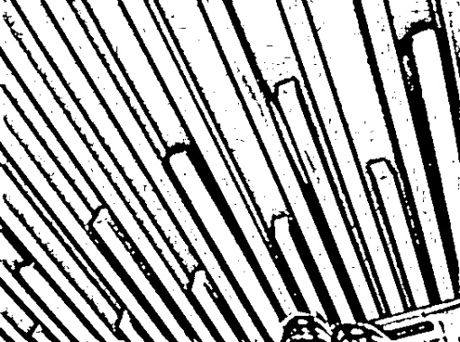
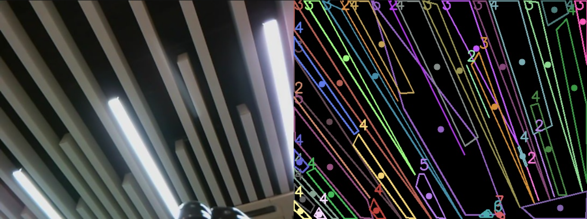
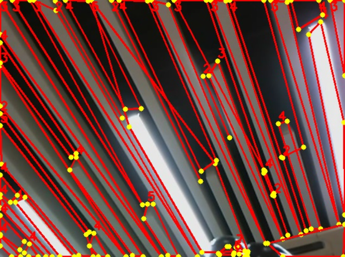
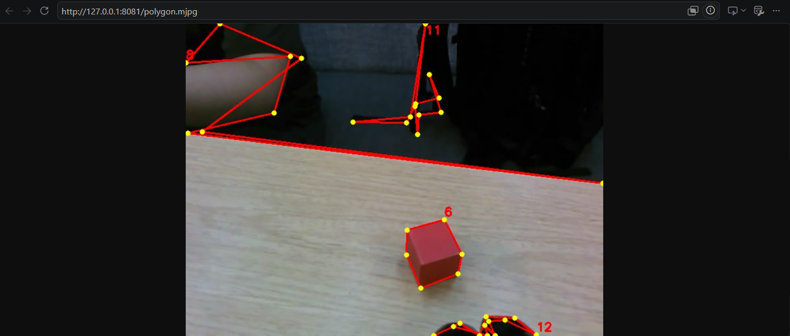

多边形轮廓巡线
给定一张俯拍地面图，把色带的边缘一步步"瘦身"成干净的多边形：二值化 → 形态学 → 外轮廓 → 凸包 → 多边形逼近，最终输出顶点、质心与"N 边形"标签。
01问题引入：小车凭什么"认得"那条线？
仓库里的 AGV 沿着地面胶带走，物料框放在一个贴了胶带的方框里——机器要回答两个问题：线在哪？框是几边形、转角朝哪？摄像头给出的只是一堆像素，怎么从灰度深浅的海洋里捞出一条边界清晰、顶点分明的"几何体"？
难点在于"噪声无处不在"：地面反光、胶带磨损、相机噪点都会让边缘长出毛刺。如果直接对每一个白色像素连线，你会得到一条上千个顶点的"锯齿怪物"。本实验要用一条标准瘦身流水线，把它收敛成 4 个顶点的矩形——而且epsilon 还能由你亲手调。
02原理通俗讲解：把轮廓"瘦身"成几何体
把这张图想象成退潮后的礁石海岸。海水（背景）退去，露出的黑色礁石（目标）边缘弯弯绕绕、尽是碎石和沙坑。我们的目标不是数沙粒，而是画出礁石的"大致形状"——几块大岩石、几个弯角。流水线每一步都在"丢掉小的、留下大的"：
设定一条水位线（阈值）：低于它的算礁石、高于它的算海水。光照不均就用 adaptive 自适应——局部区域各设各的水位。
OpenCV 轮廓提取默认"白目标黑背景"。拍到的是暗色胶带？必须 invert，否则整幅图变成一个外框轮廓——设反了后面全错。
用 3×3 的小刷子做开/闭运算：碎沙坑被填平、细砂被冲走。kernel 必须是奇数（3、5、7），偶数会让刷子"站不正"偏移半像素。
RETR_EXTERNAL 只取最外圈（不要礁石内部的水坑），min_area 过滤掉小石子级别的假轮廓。
拿一根橡皮筋套在轮廓外面自然松手，它会绷成凸包——先消掉所有凹陷，一步去掉 90% 的毛刺。
Douglas-Peucker 算法像折纸：epsilon 是容差——偏离折线小于 epsilon 的点全部扔掉。epsilon = 0.02 × 周长是经验起点。
03关联知识点
arcLength、contourArea 是 epsilon 归一化的基石：epsilon = k × peri 让阈值与目标大小无关。
moments → cx=M10/M00, cy=M01/M00：巡线时质心相对画面中线的偏移就是转向误差。
彩色图先用 inRange 得到掩膜，再进本实验流水线——两课拼出完整识别链。
质心 x 偏差 → 比例控制 → twist，本课输出就是巡线小车的"眼睛"。
- 理解 RETR_EXTERNAL / CHAIN_APPROX_SIMPLE 两种模式的输出差异。
- 记住经验参数：morph_kernel=3、min_area 按目标面积 1%~5% 起步、epsilon=0.02×peri。
- 会读多边形顶点序列并判断边数（"4边形"、"八边形"标签由此而来）。
04实验目标
05实验环境与准备
| 类别 | 内容 |
|---|---|
| 硬件 | 实验箱 B2（XFLZ_EAI_B2_PRO）俯拍rig 或本机 WebCam；巡线地毯 / 胶带样例若干 |
| 软件 | Python 3 + OpenCV（findContours、approxPolyDP、morphologyEx 皆为内置 API，纯 CPU 即可，无需 NPU） |
| 数据集 | 内置样例图（矩形框、多边形色块若干张）+ 现场采集：正对地面 30~50cm 俯拍，避免强反光 |
| 预览端口 | MJPEG 流 :8080/polygon.mjpg |
| 模式开关 | display.colored_mode 黑底彩色显示（默认开），方便看清轮廓着色 |
06动画讲解：轮廓三级瘦身
注意动画里顶点数的变化：40+ → 凸包 9 → 多边形 4。瘦身不是失真，而是提纯——巡线小车只关心"框在哪里、朝哪偏"，那些毫米级的胶带毛边本来就该扔掉。
07互动讲解：epsilon 折纸实验台
操作建议：固定矩形样例，把 epsilon 从 0.02 慢慢推到 0.12——顶点数从 4 掉到 3（矩形被折掉一个角，标签变"3边形"）。切到圆形样例，epsilon 很小时输出十几个顶点，推大后圆变多边形、最终塌成三角形——这就是 epsilon 过大的经典症状。
08实操步骤
# 实验工程下的多边形巡线模块 pytest tests/ -v 21 passed
# 1) 灰度 + 二值化（光照不均改用 adaptive） gray = cv2.cvtColor(img, cv2.COLOR_BGR2GRAY) _, binary = cv2.threshold(gray, 127, 255, cv2.THRESH_BINARY) binary = cv2.bitwise_not(binary) # invert：暗目标 -> 白目标，设反全错 # 2) 形态学去毛刺（kernel 必须奇数） kernel = cv2.getStructuringElement(cv2.MORPH_RECT, (3, 3)) binary = cv2.morphologyEx(binary, cv2.MORPH_OPEN, kernel) # 3) 外轮廓 + 面积过滤 cnts, _ = cv2.findContours(binary, cv2.RETR_EXTERNAL, cv2.CHAIN_APPROX_SIMPLE) cnts = [c for c in cnts if cv2.contourArea(c) > min_area] # 4) 凸包 + 5) 多边形逼近 + 6) 质心 hull = cv2.convexHull(c, clockwise=True) # use_hull=true 时逼近的是 hull peri = cv2.arcLength(hull, True) eps = 0.02 * peri # 黄金起点，再微调 poly = cv2.approxPolyDP(hull, eps, True) M = cv2.moments(c); cx, cy = int(M["m10"]/M["m00"]), int(M["m01"]/M["m00"]) label = str(len(poly)) + "边形"
# config: display.colored_mode = true（默认） cv2.drawContours(canvas, [c], -1, color, 2) # 原轮廓 cv2.drawContours(canvas, [poly], -1, (0,255,255), 3) # 多边形 cv2.circle(canvas, (cx, cy), 5, (255,0,255), -1) cv2.putText(canvas, label, (cx+10, cy), cv2.FONT_HERSHEY_SIMPLEX, 0.7, (0,255,0), 2)
python src/app.py --config config/detect_config.yaml --ros http://<board-ip>:8080/polygon.mjpg frame 128: 1 contour -> polygon (4 verts), centroid=(312, 205)
# 画面中线为基准，质心偏右 -> 左转修正 err = cx - img.shape[1] // 2 cmd.linear.x = 0.15 # 恒速 cmd.angular.z = -0.004 * err # 比例项，限幅 ±0.8
🛠️ 指导书步骤截图（实验指导书 · 1 图）

✅ 实验现象截图（实验指导书 · 3 图）



09重点与易错点
| 现象 | 根因 | 处理 |
|---|---|---|
| 输出 4 顶点且贴着画面边缘 | invert 没翻转，取到整图外框 | bitwise_not / THRESH_BINARY_INV |
| 圆形被折成三角形 | epsilon 过大 | 从 0.02×peri 起调，掉了就回退 |
| 顶点上千、形状抖动 | 形态学缺失或 kernel 太小 | MORPH_OPEN + kernel=3（奇数） |
| 轮廓坐标整体偏移半像素 | morph_kernel 用了偶数 | 改为 3/5/7 等奇数 |
| 识别出一堆小碎块 | min_area 太小，噪点入列 | 按目标面积 1%~5% 设 min_area |
| use_hull 语误解码出的顶点对不上 | 逼近对象是凸包不是原轮廓 | 确认配置 use_hull=true 的语义预期 |
| 光照变化后阈值全失效 | 全局固定阈值 | 切换 adaptiveThreshold 自适应 |
| MJPEG 404 | 端口或路径配错 | 核对 :8080/polygon.mjpg |
- ✅ 21 项单元测试全绿，再开始调参。
- ✅ 至少在 binary / adaptive 两种二值化下各得到一次正确多边形。
- ✅ 手动扫过 epsilon 全程，知道自己的样例在哪个值开始"丢角"。
- ✅ MJPEG 流里能实时看到轮廓、多边形、质心、"N 边形"标签四件套。
10总结与思考
六级流水线 + 参数成组调优 + 实时流验证。
从像素到轮廓到凸包到多边形，每级都在"丢小留大"。
周长/面积/质心/顶点数四个指标联合判断识别质量。
invert、kernel、epsilon 三个开关制造故障并逐个复原。